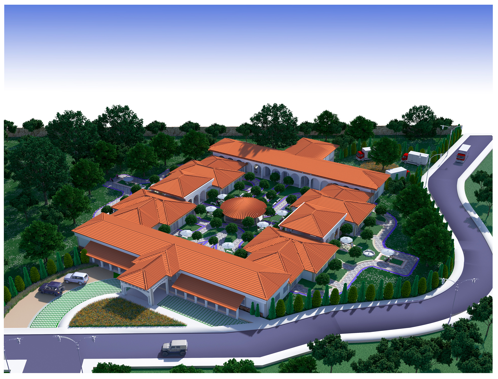
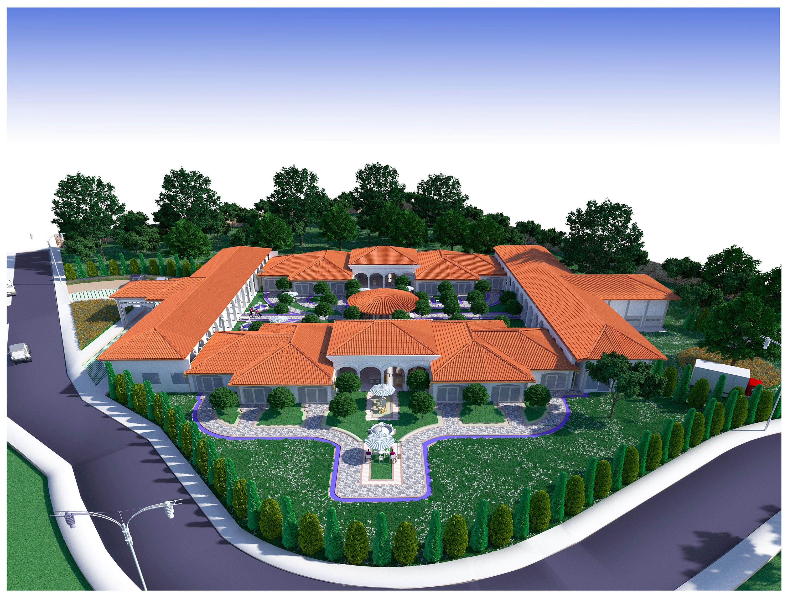

Arquitectura · Tesis de Grado · Mesa de los Santos
Un centro residencial para la atención integral del adulto mayor en la Mesa de los Santos — donde el paisaje santandereano, el lenguaje colonial y el programa de salud se articulan en una arquitectura de patios, galerías y jardines.
Este proyecto de grado propone un centro geriátrico campestre integrado al territorio de la Mesa de los Santos, respondiendo a una realidad demográfica urgente con una arquitectura que no renuncia a la dignidad espacial. El programa incluye zonas habitacionales, servicios médicos, terapia física y ocupacional, zonas sociales y amplias áreas verdes para el paseo y el descanso.
El lenguaje arquitectónico dialoga con la tradición colonial santandereana: arcadas, cubiertas a varias aguas en teja, patios interiores como pulmones de convivencia y circulaciones bajo galería. La planta general responde a criterios bioclimáticos — orientación solar, ventilación cruzada, espacios de transición entre interior y exterior — que hacen del clima de la Mesa un aliado del bienestar del habitante.
"Diseñar para quien envejece es diseñar para la experiencia más lenta y más profunda del espacio. Cada corredor, cada banca, cada sombra importa."
Renders y planos · 3 imágenes



Este proyecto fue desarrollado íntegramente con herramientas manuales y software de la época — sin inteligencia artificial, sin renderizado en tiempo real, sin asistentes generativos. Cada línea del plano, cada luz del render, cada textura de la maqueta fue resultado de decisiones tomadas a mano, píxel a píxel. Es un testimonio del oficio en su forma más directa.